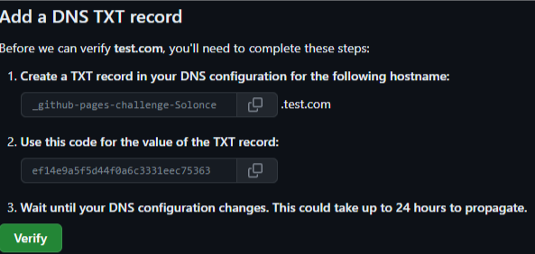
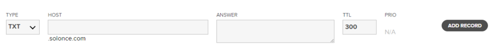
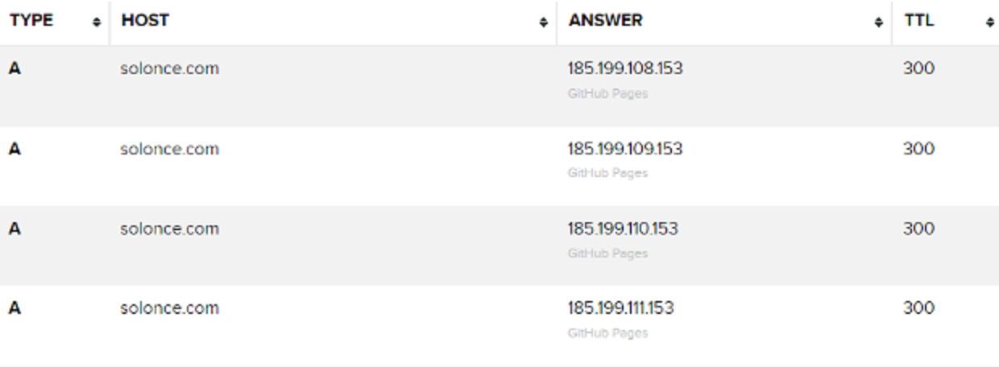
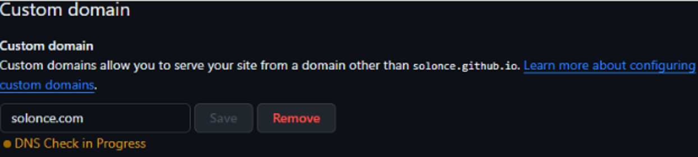
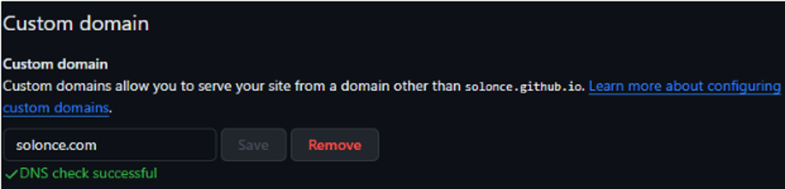

How to set a custom domain for a website hosted on Github.
Its really quite a simple process, only requiring a few fields to be set up for it to properly function. We will be using name.com to facilitate the domain hosting. However, so long you have access to a DNS Manager, you should be able to do this with any domain hosting service.Getting a DNS TXT record from Github
One of the first things will need to do is verify the DNS with Github. This can be done by traversing the menus in this manner.Profile > Settings > Coding, Planning & Automation > Pages
Then you’ll click ‘Add a Domain’
Here you should be prompted with a field for you to enter your domain name. We will use ‘test.com’ as a test ust to show you the results.

You should be given some info like this. Keep this page open, and we’ll migrate to our DNS Manager.
Setting DNS 'TXT' records
You’re going to want to open a new record set to type ‘TXT’
You’re going to put the first bit of text from github in the ‘HOST’ field, and the second bit of text in the ‘ANSWER’ field. You can leave TTL as is. Then youre going to want to add the record to your DNS.
Then you can go back to Github and verify the DNS. This may take a few minutes, but this is all we need to do on this page for now, so we can go back to our DNS manager to set up a few ‘A’ records.
Setting DNS 'A' records
Github Pages has a few name servers that we need to setup with the DNS manager. These addresses are:- 185.199.108.153
- 185.199.109.153
- 185.199.110.153
- 185.199.111.153

Setting DNS 'CNAME' records
Next, we will need to create a CNAME record for our DNS Manager.This is as simple as making any other record.
All we need to do here, is under the ‘TYPE’ field we input ‘CNAME’, and under the ‘HOST’ field we input ‘www’, and in the ‘ANSWER’ field, we input the github pages link to the webpage.
Setting Domain in Github
Then, last step should just be setting up our CNAME file and setting our custom domain on our github page repo.To do this, we need to navigate to our page settings. This can be done with this menu traversal
Repo > Settings > Code and Automation > Pages
Then, if we scroll down a bit, we will see an area for ‘Custom Domain’. We simply need to put in our domain name here. Ensure that there are no issues with our DNS records, and we are good to roll!

This make take a few minutes.

When we successfully set our domain name, the CNAME file will auto-generate in the repo.